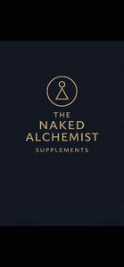

Trade Mark Journal No.2026/011 13 March 2026
UK00004334821 3 February 2026 (5)

- Class 5
- Food supplements; Dietary food supplements; Anti-oxidant food supplements; Food supplements for sportsmen; Vitamin and mineral food supplements; Food supplements for dietetic use; Vitamin preparations in the nature of food supplements; Health food supplements made principally of vitamins; Calcium tablets as a food supplement; Nutritional supplements; Dietary food supplements used for modified fasting; Health food supplements made principally of minerals; Food supplements in liquid form; Dietary supplements; Dietary supplement drinks; Dietary and nutritional supplements; Food supplements for non-medical purposes; Liquid nutritional supplements; Liquid dietary supplements; Health food supplements for persons with special dietary requirements; Protein dietary supplements; Mineral nutritional supplements; Wheat dietary supplements; Energy gels (dietary supplements); Nutraceuticals for use as a dietary supplement; Mineral dietary supplements; Vitamin supplements for animals; Colostrum dietary supplements; Chlorella dietary supplements; Bee pollen for use as a dietary food supplement; Pollen dietary supplements; Dietary supplements consisting of vitamins; Yeast dietary supplements; Dietary supplements for humans; Health-aid foods supplements containing ginseng; Protein supplements; Probiotic supplements; Acai powder dietary supplements; Dietary supplement drink mixes; Vitamin supplements; Lecithin dietary supplements; Glucose dietary supplements; Flaxseed oil dietary supplements; Protein powder dietary supplements; Nutritional supplement energy bars; Vitamin and mineral supplements for pets; Zinc dietary supplements; Mineral dietary supplements for humans; Propolis dietary supplements; Food supplements consisting of amino acids; Dietary supplements and dietetic preparations; Casein dietary supplements; Mineral supplements for feeding livestock; Dietary supplements for infants; Linseed dietary supplements; Soy protein dietary supplements; Prebiotic supplements; Nutritional supplement meal replacement bars for boosting energy; Alginate dietary supplements; Whey protein dietary supplements; Dietary supplements and dietetic preparations containing CBD oil; Herbal supplements; Dietary supplemental drinks; Liquid vitamin supplements; Dietary supplements for medical use; Albumin dietary supplements; Calcium supplements; Powdered nutritional supplement energy drink mix; Food supplements consisting of trace elements; Medicated supplements for animal feedstuffs; Powdered nutritional supplement drink mix; Dietary supplements in powder form; Vitamin and mineral supplements; Linseed oil dietary supplements; Colostrum supplements.
Stephen Gates